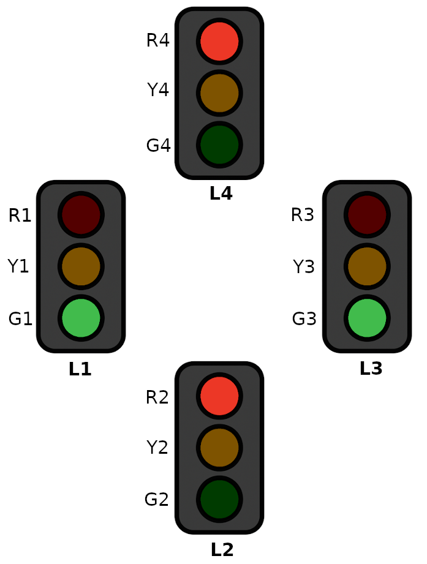
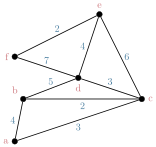

Graph Theory
Sign in to Overleaf and use this template to write your solutions.
- Choose a public transit line. Define and draw a graph to represent that line.
-
Given the following connections on a social media platform:
Alice is friends with Ben and Cara
Ben is friends with Alice, Dana, and Evan
Cara is friends with Alice, Fiona, and George
Dana is friends with Ben and Henry
Evan is friends with Ben and Isla
Fiona is friends with Cara and George
George is friends with Cara, Fiona, and Henry
Henry is friends with Dana, George, and Julia
Isla is friends with Evan and Julia
Julia is friends with Henry and Isla
- Draw a network (graph) of the relationships.
- How many connections away is Alice from Julia?
- What is the minimum number of connections that can be removed so there is no way to connection from Alice to Julia?
-
A group of five people (Alejandro, Ben, Camille, Dalia, and Elias) all want to join three clubs (Xylophone,
Yodeling, and Zoology).
- Define and draw the complete bipartite graph representing club memberships. How many memberships result?
- How many memberships would result for \(n\) people joining \(m\) clubs?
-
Fred, along with the five people from the previous problem need to split into two groups of three for a
project.
However, there is drama! Alejandro refuses to work with Camille or Elias; Dalia "just can't even" with Ben or Camille; Ben and Camille both had a falling out with Fred; "aint no way" Elias will work with Dalia.
- Define and draw a graph \(W\), with six vertices, to represent who CANNOT work with whom.
- Show that it is possible to create two groups of three by partitioning \(W\) into a bipartite graph with three vertices on each side.
- Find \(\bar{W}\), the complement of \(W\). What does \(\bar{W}\) represent?
-
Consider a standard four-way intersection with stop lights pointing in all four directions.

There are twelve total lights that can be On (\(1\)) or Off (\(0\)), and we can represent the current state of those lights with a \(12\)-bit binary word: \[R_1Y_1G_1R_2Y_2G_2R_3Y_3G_3R_4Y_4G_4\] For example, with green lights both On in one direction while the other direction has red lights, we can write: \[001100001100\] which means that \(G_1\) and \(G_3\) are On while \(R_2\) and \(R_4\) are on.
Create a directed graph to represent the behavior of the stop lights as the state transitions from one state to the next (don't worry about timing).
- Draw all of the (non-isomorphic) trees with \(|V|=6\).
-
The three graphs below correspond to three famous polyhedra.
For each graph,- Redraw the graph as a planar graph (with no edges crossing).
- Show that the graph either does or does not contain an Eulerian trail.
- Show that the graph either does or does not have a Hamiltonian path.
-
Find the minimum spanning tree of:

-
The graph \(H\) below represents towns and the the distance in km between neighboring towns.
- Write the weighted adjacency matrix for \(H\).
- There is some minimum distance between every pair of towns (not just adjacent towns). What is the average minimum distance?
- Write a matrix where each element is the minimum distance between each pair of towns.
-
In terms of \(n\) and \(m\), how many vertices and edges does each graph below have? In other words, find an
expression for \(|V|\) and \(|E|\) for each graph type. Suggestion: start with small examples and
make a table.
- \(K_{n}\)
- \(K_{n,m}\)
- \(C_{n}\)
- \(P_{n}\)
- Exercises from Levin 4.1.
- Exercises from Levin 4.5.